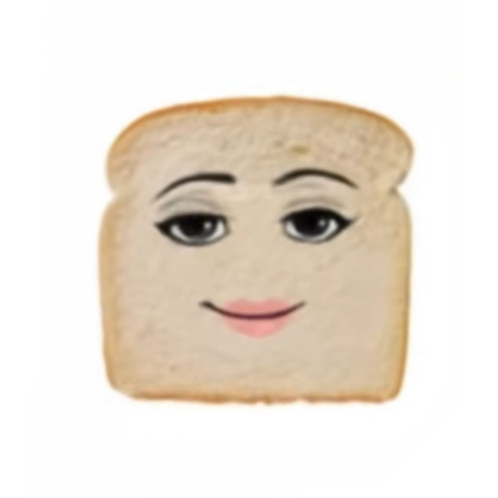

Aventura do Pão

Na padaria Caiano nasceu um pão, a última fatia do pão de forma, cujo ninguém gosta. Ele viu seus amigos sendo levados pelo padeiro e jurou vingança. Ajude o pão de forma a vingar seus amigos!
Ao levantar da cesta de pães, ele encontra dois corredores: o dos frios e o das bebidas. Em cada corredor um oponente, qual deseja enfrentar?